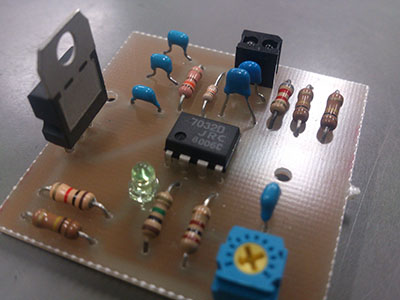
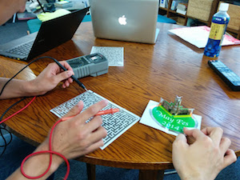

ワークショップ
今年は新たな試みとして、さまざまなワークショップを開設します。毎年好評を博している電子工作教室に加え、対象年齢の異なる二種類のプログラミング教室と、銀インクを使用した回路お絵かき体験教室を用意しています。どれも初心者の方を対象としていますし、親子でのご参加も可能ですので、興味はあるけど一人で始めるのはちょっとハードルが高いと思っている方も、お子さんに実際に手を動かしてものを作る楽しみを知ってほしいと思っている方も、ぜひご参加ください。電気系学生が丁寧に教えます。
詳細は以下のタイトルをクリックしてご覧ください。
- 日程
- 全日（キットがなくなり次第終了）
- 場所
- 工学部2号館4階41A教室
- 対象年齢
- どなたでも
- 予約
- 不要
初級・中級・上級の3種類のオリジナル電子工作キットを用意しています。詳しくは以下をご覧ください。いずれも数に限りがありますので、お早めにいらしてください。
赤外線センサを指先にあてることで脈拍を測定でき、脈拍と同期してLEDが点滅します。キット販売価格800円。
去年の電子工作の改良版です。とりつけられたボタンを高速に連打するほど、LEDのレベルメーターが光ります。キット販売価格1500円。
ボタンを押すとドレミファソラシドが鳴る、という電子ピアノに録音機能をとりつけたもので、自分の録音を録音して、自動再生できる機能がついています。唯一マイコンを用いていて、ソースもGithubを通じて公開する予定です。キット販売価格3000円。
- 講師
- 岩成達哉（電子情報工学科4年）
- 日程
- 5/17（土）10:30~13:00/14:30~17:00
- 場所
- 工学部2号館4階413教室
- 対象年齢
- 小学生
- 定員
- 各回10名
- 予約
- 必要 *定員が限られているため、1グループにつき1台のタブレットを使用していただきます。グループで参加される方は、代表の方のみ予約フォームから予約を行ってください。 予約はこちらから
Androidのアプリを使って、ロボットを動かすプログラムを作ります。このアプリでは、パソコンを使って文字でコードを書くのではなく、タブレット上で、下の右側の図のようにブロックを組み立てるようにプログラムを組んでいくことができるので、小さなお子さんでも直観的にプログラミングができます。自分の作ったプログラム通りにロボットが動く楽しみをぜひ味わってください。このアプリを開発した本人が、基礎からやさしく教えます。以前行った企画の様子はこちら。

- 講師
- 伏見遼平（電子情報工学科4年）
- 日程
- 5/17（土）10:30~13:00/14:30~17:00
- 場所
- 工学部2号館4階241教室
- 対象年齢
- 中高生以上
- 定員
- 各回20~30名
- 予約
- 必要ですが、当日空きがあれば飛び入り参加可能です 予約はこちらから
中学生以上対象のプログラミング講座では、自由にゲームを作りながらプログラミングの基礎を学ぶことができます。2時間半の講座で、「プログラムとは?」「なぜいまプログラミングを学ぶのか?」などの基礎講座、話題の「enchant.js」を使っただれでもオリジナルのゲームが作れるワークショップのプログラムを予定しています。作ったゲームはおみやげとして自分のスマホで持ち帰ることができます。前半のみの参加でも歓迎です。

- 日程
- 5/17（土）10:00~10:30/14:00~14:305/18（日）11:00~11:30/14:00~14:30/16:00~16:30
- 場所
- 工学部2号館4階241教室
- 対象年齢
- どなたでも
- 予約
- 不要
銀ナノインクのペンでインクジェット写真用紙に線を書くことで、それが電気を通し、回路を簡単に作ることが出来ます ペンのインクは数秒で乾くため、その場で回路になり、すぐに動かすことが出来ます。LEDなどの部品も電気を通す両面テープでとめるだけで簡単に作れるので気軽に挑戦してもらえます。また、紙に書いた回路なので折り曲げなどにも強く、水に濡れても大丈夫です。オリジナルな作品をお持ち帰りいただけます。
